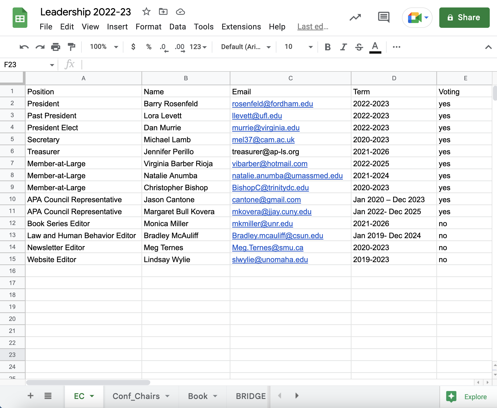
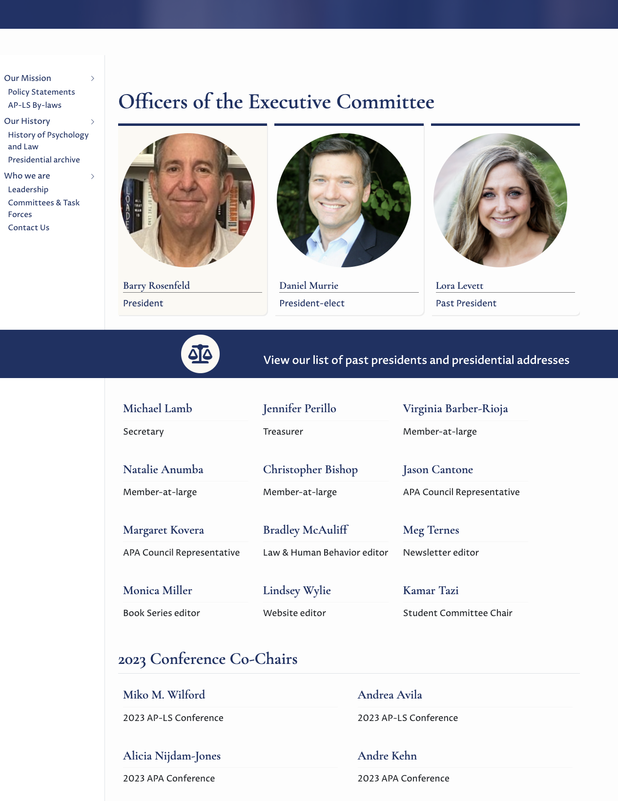
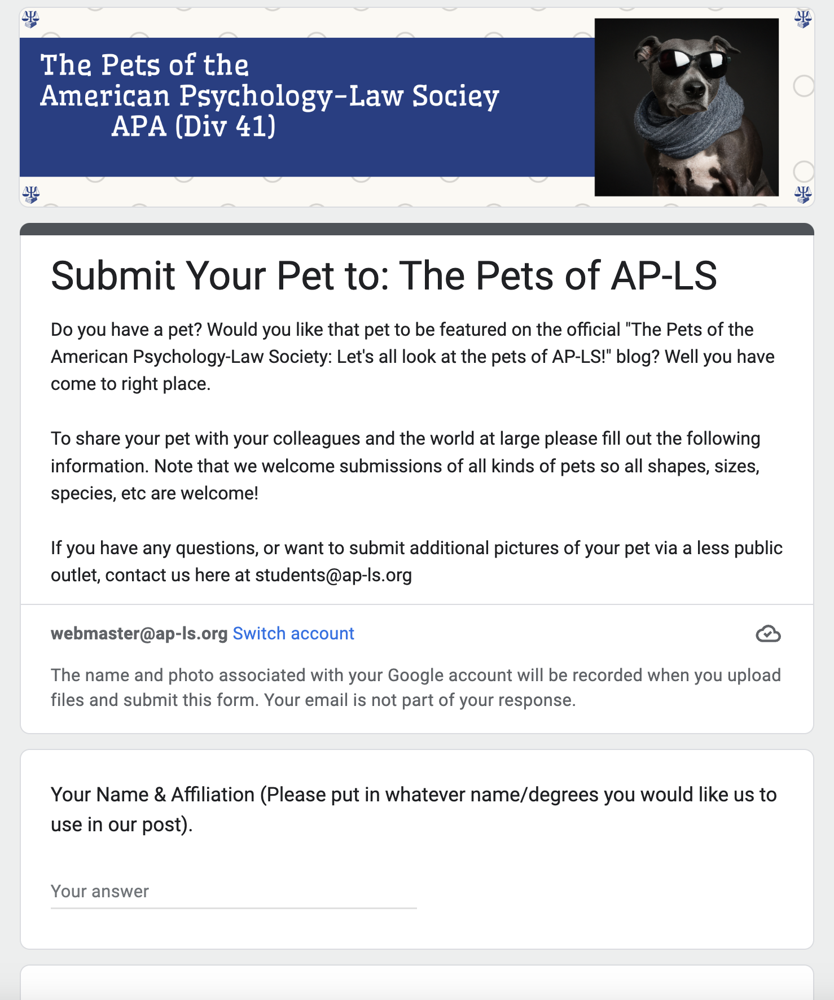
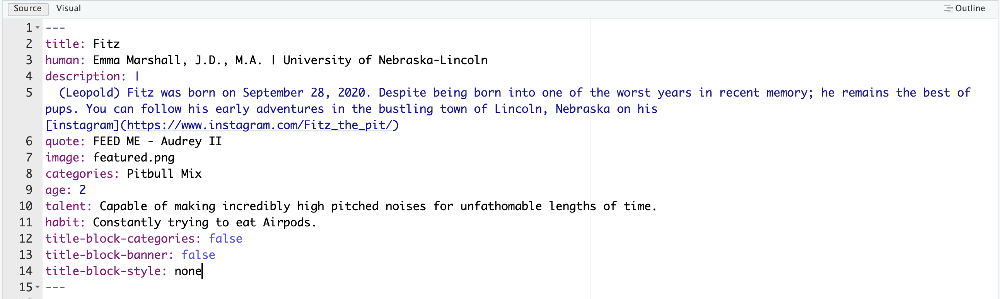
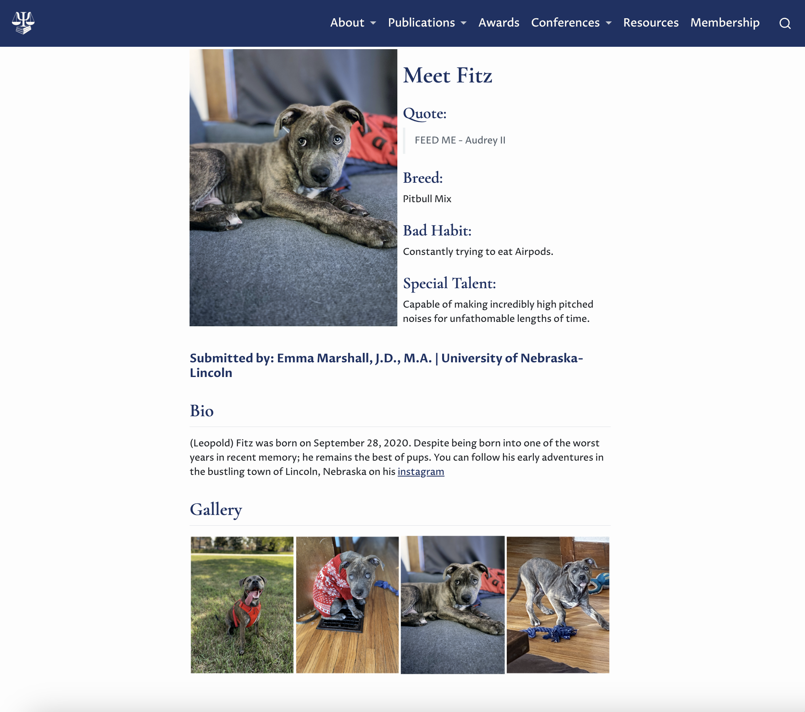

Did AP-LS really need a new Website?
SQUARESPACE® made it easy to integrate sophisticated widgets and design…
We paid for many advanced tools & features we never used/needed
The new features they developed and introduce were largely irrelevant to us – i.e., did not target an academic or scientific audience
Allowed for embedding/hosting docs/resources, but provided few options for indexing dynamic content without python or advance js knowledge
No option for version control
…and APA’s site structure was well suited to serve AP-LS…
We still lacked control over look/feel of the site
Slow response time made it difficult to add/remove dynamic content
Content sometimes lost in translation between web editor and APA web professionals
No option for version control
Welcome to the new ap-ls.org!
This new ap-ls.org website is built entirely in RStudio using Quarto.
Quarto® is an open-source scientific and technical publishing system built on Pandoc.
Designed with a scientific publishing audience in mind by Posit® (formerly RStudio)
Makes it easy to incorporate reproducible content
Allows documents to be rendered in multiple formats including reports, presentations, websites or books in html, pdf, word, etc.
Includes features tailored to academic and scientific writing or resources
- Makes it easy to do things like execute code in
rorpythonor include citations, footnotes, scientific markdown, equations, citations, crossrefs, etc with minimal programming knowledge.
- Makes it easy to do things like execute code in
How this website works
The site is published using Netlify.
We are currently using the free version of Netlify but can upgrade to the paid alternative if we want more advanced features like password protected pages.
We also do not currently have google analytics or other tracking set up on the site. That can change if you want it to.
The content for the site is stored in the shared AP-LS Google Drive and the pages for the site are all stored on GitHub.
Making things easier
With git and version control we can spend less time maintaining a better record of what changes are made and when (and by whom).
By storing the content for our site in the shared
googledrivewe can streamline the process of making annual updates and also present more dynamic content on our pages.

To update the new directory page for next year, you just have to create a duplicate spreadsheet and provide the updated url to the code block within the leadership.qmd or committees.qmd file.
The information will be read into r and formatted for publication on the site:

For additional information about how this workflow can be used to make interactive tables: see Committees or Conference schedule
We can also use a similar process to collect and share content solicited from our membership.
Take a look at the newly renovated Pets of AP-LS blog post page. This is a project of the Student Committee and is now set up to generate a new post whenever someone submits a new pet via the associated google form.
When we receive a new pet, the data will be read into r and generate a new index.qmd template file with those details.


Once we confirm and approve that the submission is legitimate, we can render the doc and add it to our site.
